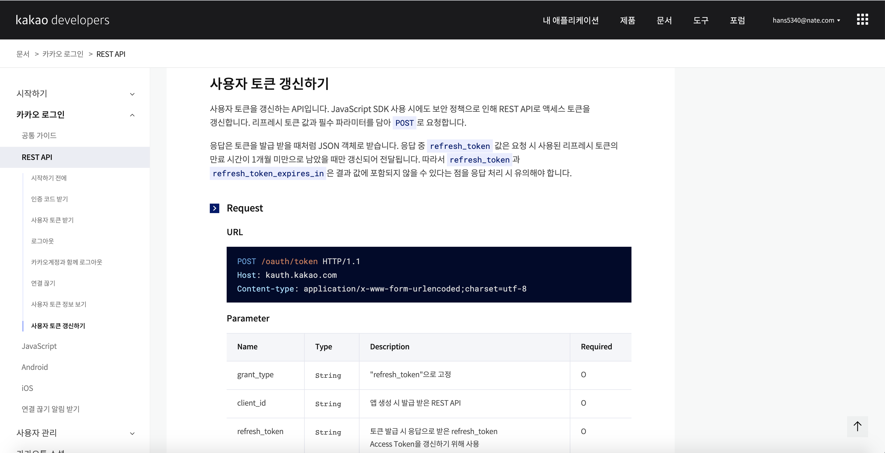

[Kakao API] Refresh token 발급받기
Kakao API [Refresh token]
오늘은 Refresh token에 대하여 알아보겠습니다.
아직 사용자 토큰을 받지 못하신 분은 [Kakao API] 사용자토큰 을 참고하여 사용자토큰을 먼저 받고 오시면 되겠습니다. Refresh token 토큰은 사용자 토큰을 받는방법과 비슷합니다.
Refresh token 받기
여러분들이 직접 카카오에 있는 사용법을 보고 사용할 수 있도록 설명하겠습니다.
먼저 refresh 토큰을 발급받기 위해 사용자 토큰 갱신하기 항목을 참고합니다.

POST /oauth/token HTTP/1.1
Host: kauth.kakao.com
Content-type: application/x-www-form-urlencoded;charset=utf-8
Access token 을 받는 것과 마찬가지로 하기 Request에서 어떤 값을 필수로 입력하여야 하는지 확인합니다.
Request
Parameter
| Name | Type | Description | Required |
|---|---|---|---|
| grant_type | String |
“refresh_token”으로 고정 | O |
| client_id | String |
앱 생성 시 발급 받은 REST API | O |
| refresh_token | String |
토큰 발급 시 응답으로 받은 refresh_token Access Token을 갱신하기 위해 사용 | O |
| client_secret | String |
토큰 발급 시, 보안을 강화하기 위해 추가 확인하는 코드 [내 애플리케이션] > [보안]에서 설정 가능 ON 상태인 경우 필수 설정해야 함 | X |
상기의 Request 를 정확히 하면 응답으로 하기 값을 받을수 있습니다. 즉 refresh token을 입력하면 access_token이 변경되는 구조입니다.
Response
Key
| Name | Type | Description |
|---|---|---|
| token_type | String |
토큰 타입, “bearer”로 고정 |
| access_token | String |
갱신된 사용자 액세스 토큰 값 |
| expires_in | Integer |
액세스 토큰 만료 시간(초) |
| refresh_token | String |
갱신된 사용자 리프레시 토큰 값, 기존 리프레시 토큰의 유효기간이 1개월 미만인 경우에만 갱신 |
| refresh_token_expires_in | Integer |
리프레시 토큰 만료 시간(초) |
더 밑으로 내려보면 Sample Code를 확인할 수 있습니다.
Sample
Request
curl -v -X POST https://kauth.kakao.com/oauth/token \
-d 'grant_type=refresh_token' \
-d 'client_id={REST_API_KEY}' \
-d 'refresh_token={USER_REFRESH_TOKEN}'
Sample 코드를 바탕으로 Python에서 작업을 해보도록 하겠습니다.
Access token (usertoken) 은 [Kakao API] 사용자토큰 에서 저장한 json 파일을 사용하도록 하겠습니다.
with open("kakao_token.json", 'r') as fp:
tokens = json.load(fp) # json 불러오기
print(tokens)
url = "https://kauth.kakao.com/oauth/token"
data = {
"grant_type" : "refresh_token",
"client_id" : app_key,
"refresh_token" : tokens['refresh_token']
}
#
response = requests.post(url, data=data)
response.status_code
response.json()
tokens['access_token'] = response.json()['access_token']
tokens['app_key'] = app_key
with open("kakao_token.json", 'w') as fp:
json.dump(tokens, fp) # 저장하는 것
코드설명
tokens['access_token'] = response.json()['access_token']
refresh token을 통해 다시 발급 받은 access_token을 json파일에 저장하여 갱신합니다.
오늘은 카카오 API를 사용하기 위하여 Refresh token 을 발급받아 보았습니다.